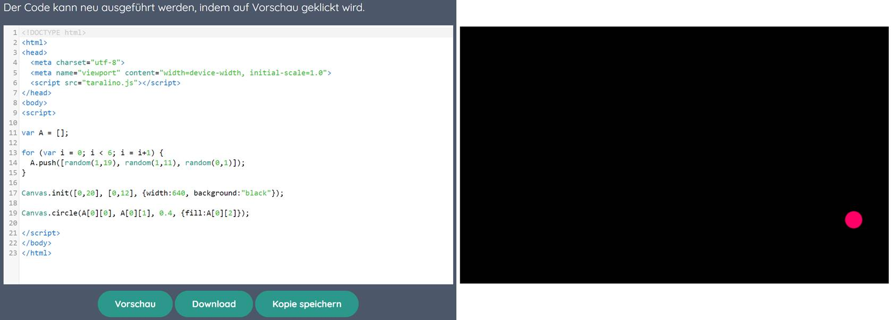
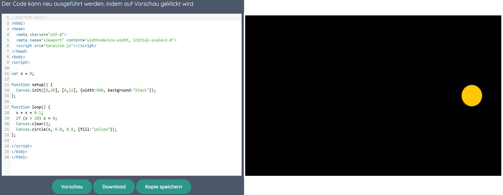

Sitzung - Thema: Evaluation von Unterrichtsmaterialien für den Informatikunterricht
Aufgabenstellung
Das vorliegende Unterrichtsmaterial soll mithilfe des zuvor erworbenen Wissens zum Thema didaktische Ansätze beim Programmieren analysiert und im Bezug auf die Nutzbarkeit innerhalb des Informatikunterrichts evaluiert werden.
Grundlage für die Bearbeitung der Aufgabe ist das Schulbuch "blickpunkt. INFORMATIK Baden-Württemberg" vom westermann-Verlag. Das Buch ist für den Einsatz in den
Schulklassen 7 bis 10 gedacht.
1. Überblick über die Themen im Abschnitt „Programmieren“
Das Kapitel "Programmieren mit Programmiersprachen" erstreckt sich über 34 Seiten. Der erste Abschnitt (S.178-179) beschäftigt sich mit der textbasierten Programmierung. Es wird
der Unterschied zu grafischen Programmiersprachen, wie z.B. Scratch erläutert, die statt Programmcode Codebausteine nutzen. Es wird ein Überblick über verbreitete textbasierte
Programmiersprachen, wie z.B. Python, PHP und C++ gegeben. Es folgt eine kurze Einführung in die taralino-Entwicklungsumgebung, in der man JavaScript-Programme schreiben kann.
Der Abschnitt "Die Canvas-Zeichenfläche" (S.180-183) geht weiter auf das Programmieren in der taralino-Entwicklungsumgebung ein. Es wird das Canvas-Paket von taralino
vorgestellt, das es erlaubt, Formen auf einer Zeichenfläche zu zeichnen. Darauf folgt eine Einführung wie die Zeichenfläche initialisiert wird. In einem weiteren Abschnitt wird auf
die Semantik und Syntaktik eines Befehls eingegangen, um einen Kreis in Größe und Farbe zu definieren, der auf der Zeichenfläche erscheinen soll. In weiteren Beispielen wird gezeigt,
welche weiteren Möglichkeiten das Canvas-Paket bietet. So können weitere individualisierte Formen erstellt und in Farbe und Kontur angepasst werden. Es wird darauf verwiesen, dass
neben dem Online-Editor von taralino auch Offline Alternativen, wie beispielsweise Notepad++ zur Verfügung stehen.
Der Abschnitt "Schleifen" (S.184-185) führt die for-Schleife ein. Inhaltlich wird dabei auf die Canvas Zeichenfläche aufgebaut, die zuvor eingeführt worden ist. So wird der im
voherigen Abschnitt eingeführte Zeichenbefehl in eine for-Schleife eingebettet, sodass beispielsweise mehrere Kreise an Verschiedenen Positionen auf der Zeichenfläche gezeichnet
werden können. Um dieses Ergebnis zu erzielen wurden anstelle der Koordinaten, Variablen eingesetzt, die sich bei jedem Schleifendurchgang verändert. Es werden verschachtelte
for-Schleifen eingeführt, um sowohl die X-Achsen und Y-Achsen Position des Musters zu verändern. In diesem Abschnitt wird ein Verweis auf eine Digitale Ressource gegeben,
die über einen QR-Code abrufbar ist. Dort findet sich die ensprechende Aufgabenstellung mit Programmcode auf der
taralino-Webseite.
Der Abschnitt "Variablen" (S.186-187) beschäftigt sich mit der Deklaration und Nutzung von Variablen in Java Script. Es wird auf die verschiedenen Datentypen eingegangen. Insbesondere
wird auf den Datentyp Zahl eingegangen und wie mit derartigen Variablen Berechnungen durchgeführt werden können. Der Abschnitt schließt mit einen Verweis auf eine digitale Ressource ab,
bei der die im voherigen Abschnitt beschriebene Aufgabe, um den Einsatz von Variablen erweitert werden soll. So sollen die Koordinaten, die die Position des Musters auf der Zeichenfläche
definieren in Form von Variablen abgespeichert werden.
Der Abschnitt "Bedingte Anweisungen" (S.188-189) setzt sich mit den Themen if/else-Strukturen, Vergleichsoperatoren, Und/Oder-Verknüpfungen auseinander und wie diese verschachtelt werden
können. Explizit wird darauf eingegangen, wie eine if-Struktur definiert wird und wie eine entsprechende Bedingung aufgestellt wird. Die entsprechenden Codebeispiele knüpfen an die Beispiele
der vorherigen Abschnitte an. So muss z.B. eine Bedingung aufgestellt werden, die entscheidet wo welches Muster auf der Zeichenfläche gezeichnet werden darf. Die entsprechende Übungsaufgabe
kann über einen QR-Code aufgerufen werden und in taralino bearbeitet werden.
Der Abschnitt "Datenfelder" (S.190-192) behandelt das Erstellen von Datenfeldern wie Arrays und wie diese entsprechend ausgelesen oder ausgegeben werden können. Es wird erklärt, wie
in Java Script Datenfelder initialisiert werden. Es wird die Verwendung von Arrays in Verbindung mit Schleifen erläutert. Explizit wird gezeigt, wie auf diese Art und Weise Elemente in ein
Datenfeld hinzugefügt werden oder ausgegeben werden können. Zudem wird auch auf die Nutzung von zweidimensionalen Datenfeldern eingegangen.
Dies wird wiederum in einer entsprechenden Aufgabe vertieft, die online in taralino bearbeitet werden kann.
Der Abschnitt "Befehle und Funktionen" (S.194-195) beschäftigt sich mit der Erstellung von Funktionen in Java Script. Es wird erklärt, wie die in den vorherigen Lektionen kennengelernten
Anweisungen mit dem funktion-Block modularisiert werden können, um somit durch einen Methodenaufruf an beliebiger Stelle einer JavaScript-Datei aufgerufen werden zu können. Der Abschnitt behandelt
die Definition bzw. Struktur einer Funktion in Java Script. So wird gezeigt, wie die Inputvariablen und der Rückgabewert definiert werden. Ergänzend zur Erstellung von mathematischen Berechnungen in
einer Funktion, wird das Math-Paket vorgestellt, dass bereits grundlegende mathematische Funktionen enthält.
Der Abschnitt "Animationen" (S.198-199) zeigt wie in der taralino-IDE Animationen erstellt werden können, die auf der Zeichenfläche sichtbar sind. Inhaltlich wird dabei an die vorangegangenen Themen
angeknüpft, bei der ein Kreis mit dem circle-Befehl auf die Zeichenfläche gezeichnet wurde. Die Animation in taralino beruht auf den Funktionen "setup" und "loop". Setup wird initial ausgeführt und loop wird
wiederholend aufgerufen. So können bewegte Figuren dargestellt werden. Im Bezug auf die Darstellung der Animation wird auf die Bildrate und Laufzeit eingegangen, die in der Setup Funktion festgelegt werden kann,
um zu steuern in welcher Frequenz der loop-Befehl ausgeführt werden soll. Die Lektion schließt mit Aufgaben in taralino ab, die die in der Lektion behandelten Themen praktisch zur Anwendung bringen soll.
Der Abschnitt "Sortierverfahren" (S.204-205) setzt sich mit den Sortierverfahren Bubblesort und Mergesort auseinander. Zu Beginn wird der Bubblesort Algorithmus erklärt. Dieser wird zunächst durch eine grafische
Darstellung eines unsortierten Datenfelds visualisiert. Es wird schrittweise gezeigt wie die Zahlen des Datenfelds der Größe nach aufsteigend mit dem Bubblesort-Verfahren sortiert werden. Es werden die Nachteile des
Bubblesort-Verfahrens erklärt und auf das effizientere Mergesort-Verfahren verwiesen. Es wird in einem Infotext das Mergesort-Verfahren näher erläutert. Im Anschluss wird ein entsprechendes Java Script Codefragment
präsentiert, das eine Implementierung des Bubblesort-Verfahrens zeigt. Abschließend wird auf Aufgaben verwiesen, die das Ziel haben den Bubblesort-Algorithmus zu verstehen und zu programmieren. Des Weiteren soll
ein Vergleich zum Mergesort-Verfahren bezüglich der Laufzeit durchgeführt werden.
Der Abschnitt "Der RGB-Farbraum" (S.206-207) behandelt die Codierung von Farben, die zur Farbmischung in der Programmierung eingesetzt wird. Es wird darauf eingegangen, wie in taralino eine Farbe in RGB-Codierung
definiert wird. Dazu werden anhand des circle-Befehls in taralino entsprechende Codebeispiele bereitgestellt. Es folgen Aufgaben, die das Verständnis für die RGB-Codierung vertiefen sollen.
Der Abschnitt "Bildverarbeitung" (S.208-209) beschäftigt sich mit dem Zustandekommen von Bildern auf einer digitalen Oberfläche, wie z.B. einem Display. So besteht ein Bild aus einem Datenfeld, das Pixel in einer
entsprechenden RGB-Codierung enthält. Es wird das Picture-Paket der taralino-Bibliothek vorgestellt, dass den Picture.draw-Befehl enthält, der es erlaubt ein digitales Bild darzustellen. Dies wird anhand eines Codebeispiels
veranschaulicht. Es folgt ein Abschnitt, der sich mit der Manipulation eines digitalen Bildes beschäftigt. Mittels einer algorithmischen Manipulation kann das Bild invertiert oder in Graustufen abgewandelt werden.
Am Ende des Themenabschnitts werden Materialien mit Aufgaben zur Verfügung gestellt, die die Definition und Manipulation von Bildern inhaltlich anwenden.
2. Verwendete Programmiersprachen
Im Kapitel „Programmieren mit Programmiersprachen“ des „Blickpunkt Informatik“ wird primär mit JavaScript gearbeitet, und dies erfolgt innerhalb der Taralino-IDE („Taralino“, o. D.). JavaScript ist eine weit verbreitete
Programmiersprache, insbesondere in der Webentwicklung, und eignet sich daher für interaktive und dynamische Webanwendungen. Taralino ist eine webbasierte Entwicklungsumgebung, die speziell auf die Bedürfnisse von Schülern zugeschnitten
ist und somit den Einstieg in die Programmierung erleichtert. Als Offline-Alternative wird im Buch auf den Notepad++ Editor verwiesen (S.183).
3. Objects First vs. Objects Later Ansatz
In diesem Buch wird der Objects Later Ansatz verfolgt. Es werden im Buch zunächst grundlegende Programmierkonzepte in Java Script vermittelt. Eine Einführung in die OOP, die erst später bei diesem Ansatz thematisiert wird, kann
in diesem Abschnitt des Buches nicht gefunden werden. In der Regel ist JavaScript keine rein objektorientierte Programmiersprache, wie z.B. Java oder C++. Es unterstützt jedoch objektorientierte Programmierung (OOP),
das Konzepte wie Klassen und Vererbung beinhaltet. Da dieses Buch sich an die Klassenstufen 7 bis 10 richtet, passt der Objects-Later-Ansatz zur Altersgruppe und dem erwarteten Kenntnisstand der Schüler, da er ihnen erlaubt,
zuerst die Grundlagen der Programmierung zu verstehen und anzuwenden, bevor sie sich mit den komplexeren Themen der objektorientierten Programmierung auseinandersetzen. Die gewählte Reihenfolge der Themen zum Thema "Programmieren"
dürfte darauf abzielen, den Schülern eine Grundlage zu bieten, bevor sie mit OOP konfrontiert werden, was didaktisch sinnvoll und im Unterricht gut einsetzbar ist.
4. Didaktische Ansätze
Im Kapitel „Programmieren mit Programmiersprachen“ wird zu Themen wie Variablen, Schleifen, Datenfelder und Funktionen zunächst eine theoretische Einführung gegeben, bevor die Schüler die dazugehörigen praktischen Aufgaben in
der Taralino-IDE bearbeiten. Die Konzepte werden zunächst in einer einfachen Form präsentiert, reproduziert bevor später mit komplexeren Szenarien in den Transfer übergegangen wird. Dies fördert ein tiefes Verständnis, da die Schüler auf
bereits erlerntem Wissen aufbauen können. Beispielsweise wird beim Thema "Die Canvas-Zeichenfläche" (S.180) nach der theoretischen Einführung in das Thema auf das Lernmaterial mit Aufgaben auf der taralino-Website verwiesen. Dort
wird der Leseansatz verfolgt, d.h. die Schüler finden bereits in der taralino-Entwicklungsumgebung einen zur Aufgabe passenden Code, der lediglich zeigt, wie ein Muster auf der Canvas-Zeichenfläche gezeichnet wird. Die darauf folgenden
Aufgaben steigern sich im Schwierigkeitsgrad. So müssen zunächst einzelne Parameter, wie z.B. Größe des Musters oder Zeichefläche sowie die Farben des Musters oder des Hintergrunds verändert werden. Dies mündet am Ende
in eine Aufgabe, bei der alle, zuvor angegewendeten Teilaufgaben zusammen ausgeführt werden müssen.
Auf das gesamte Kapitel bezogen, deutet einiges auf die Nutzung des Spiralansatzes hin. So werden im Kapitel „Programmieren mit Programmiersprachen“ zunächst einfache Programmierkonzepte einführt und diese später in neuen, komplexeren
Kontexten erneut verwendet. So wird beispielsweise die for-Schleife in einem Abschnitt behandelt und beim Thema Datenfelder kommt es im Aufgabenteil zu einem erneuten Anwendungsfall für Schleifen, wenn es darum geht Inhalte eines Datenfelds zu
analysieren. Zudem schließt das Kapitel mit dem Abschnitt "Zusammenfassung" und "Trainer" (S.210-211)ab. Dort werden sämtliche Inhalte bezogen auf die textbasierte Programmierung in JavaScript über die taralino-IDE wiederholt.
5. Beispielhafte Übungen und Aufgaben
S.192 Aufgabe M3 Thema: Zweidimensionale Datenfelder
Aufgabenstellung

Bewertung der Aufgabe
Diese Aufgabe bietet sie eine gute Möglichkeit, das Verständnis für Datenfelder nach der theoretischen Einführung zu vertiefen. Die Aufgabe bietet eine ausgewogene Mischung aus einfachen Code-Analysen und kreativen Erweiterungen, was eine differenzierte Förderung von Schülern unterschiedlicher Niveaus ermöglicht. Obwohl die Aufgabe zunächst theoretisch erscheint, bietet sie eine solide Grundlage für Anwendungen in der Computergrafik und vermittelt wichtige Programmierprinzipien.
S.199 Aufgabe M2 Thema: Springende Bälle
Aufgabenstellung

Bewertung der Aufgabe
Die Aufgabe scheint gut im Kapitel platziert zu sein, da sie eine sinnvolle Vertiefung nach der Einführung der Konzepte wie Arrays und der Taralino-IDE darstellt. Sie bietet eine ausgewogene Mischung aus theoretischem Verständnis, praktischer Anwendung und kreativer Problemlösung. Unterschiedliche Lernniveaus werden durch die gestaffelten Anforderungen abgedeckt. Wie die Aufgabe zu den zweidimensionalen Datenfeldern erscheint die Aufgabe zunächst theoretisch, jedoch vermittelt sie Konzepte, die für reale Anwendungsgebiete relevant sind, da sie die Themen Variiablen, Funktionen, Schleifen und Datenfelder miteinander vereint.
6. Evaluation der Praxisrelevanz
Das Kapitel "Programmieren mit Programmiersprachen" ist inhaltlich so gestaltet, dass es den Schülern grundlegende Konzepte der textbasierten Programmierung vermittelt, welche in praktischen Anwendungsfällen relevant sind. Der Vergleich zwischen textbasierten und grafischen Programmiersprachen (S.178-179) bereitet die Schüler darauf vor, in der realen Welt häufig eingesetzte Sprachen wie JavaScript, Python oder PHP zu verwenden. Diese Sprachen sind essenziell in der Webentwicklung und Datenverarbeitung. Durch das Arbeiten mit der Canvas-Zeichenfläche (S.180-183) lernen die Schüler, einfache Visualisierungen und Animationen zu erstellen. Dies kann auf reale Szenarien wie grafische Benutzeroberflächen oder Datenvisualisierungen angewandt werden. Die Fokussierung auf Variablen, Schleifen und Datenfelder (S.184-192) bietet den Schülern das grundlegende Handwerkszeug für viele typische Programmieraufgaben, z. B. in der Automatisierung, Algorithmenentwicklung und Datenverarbeitung. Das Kapitel bereitet die Schüler auf Problemstellungen vor, die auch in der Praxis vorkommen können. Es deckt relevante Programmierkonzepte ab, die sich auch auf andere Programmiersprachen und IDE's adaptieren lassen.
7. Einbindung des Buches im Unterricht
Durch die klare Struktur und die detaillierte Einführung in die Programmiersprache JavaScript kann das Buch als zentrales Lehrmaterial genutzt werden. Die Lerninhalte sind didaktisch gut aufbereitet und steigern sich im Schwierigkeitsgrad, was eine systematische Einführung in die Programmierung ermöglicht. Die Aufgaben am Ende jedes Abschnitts sowie die Zusammenfassungen und Trainer-Seiten (S.210-211) bieten eine gute Grundlage für die Wiederholung der wichtigsten Themen. Die Schüler können durch die Übungsaufgaben ihr Wissen festigen und sich gezielt auf Klassenarbeiten vorbereiten. Im klassischen Frontalunterricht kann das Buch als Grundlage für die Einführung neuer Themen verwendet werden. Die strukturierten Erklärungen und Beispiele bieten eine gute Basis für die Vermittlung theoretischer Inhalte, die anschließend durch praktische Übungen ergänzt werden können. Durch die Kombination aus theoretischer Erklärung und selbstgesteuerten praktischen Aufgaben sowie der Einbindung von Online-Ressourcen ist es auch für Gruppenarbeit und Projektarbeit geeignet.
8. Fazit
Die Wahl von JavaScript im „Blickpunkt Informatik“ ist insgesamt gut durchdacht und passend für die Zielgruppe. Sie entspricht aktuellen Trends in der Informatikbildung und bietet Schülern die Möglichkeit, relevante und praxisnahe Programmierfähigkeiten zu entwickeln. Die Integration in die Taralino-IDE erleichtert den Einstieg und ermöglicht es den Schülern, ihre Kenntnisse in einem realitätsnahen Kontext anzuwenden. Dies macht die Sprachwahl für den Unterricht sinnvoll, solange die didaktischen Materialien gut auf die Bedürfnisse und das Niveau der Schüler abgestimmt sind. Auch spricht das Lernmaterial unterschiedliche Lernniveaus an und fördert sowohl das technische Verständnis als auch das kreative Problemlösen, was sie zu einem wertvollen Bestandteil des Informatikunterrichts macht.
Auf der anderen Seite kann die starke Fixierung auf Java Script mit der taralino-IDE auch als problematisch angesehen werden, da sie wenig Spielraum lässt, als Lehrkraft eigene didaktische Konzepte oder Inhalte zu integrieren. Vor allem, wenn statt Java Script eine andere Programmiersprache gelehrt werden soll, können die Inhalte des Buches nicht effektiv genutzt werden. Vielleicht wäre es sinnvoller mit den Schülern auf IDE´s auszuweichen, die verbreiteter sind, wie z.B. VS Code. Dies würde den späteren Wechsel auf andere Programmiersprachen erleichtern und die Realitätsnähe steigern.